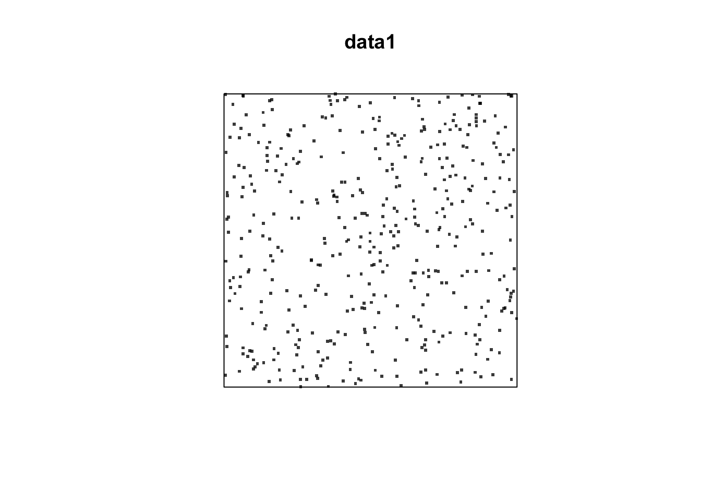
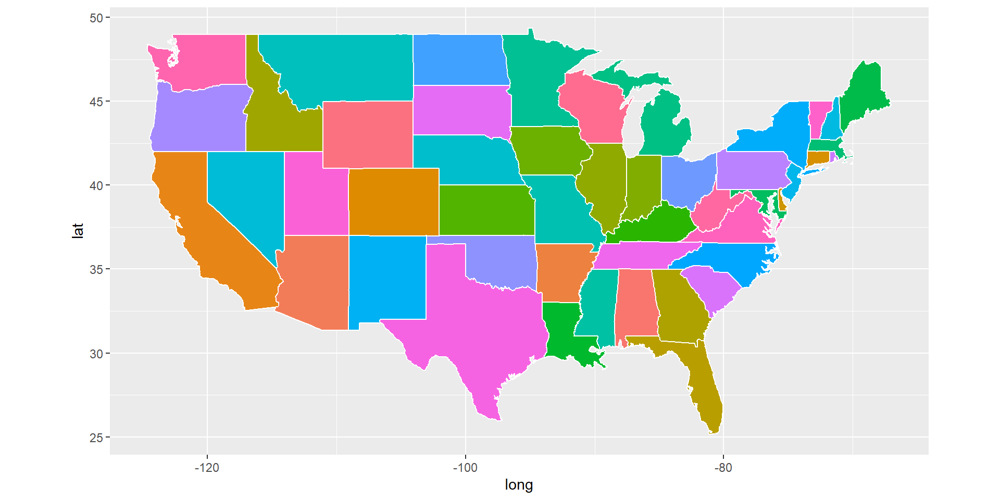
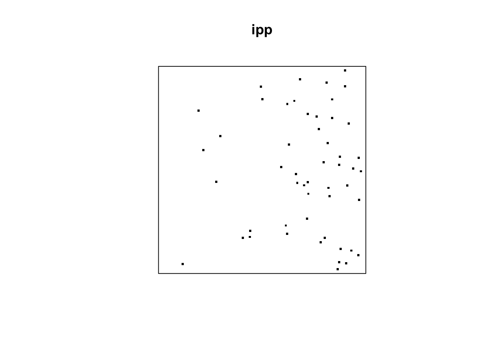
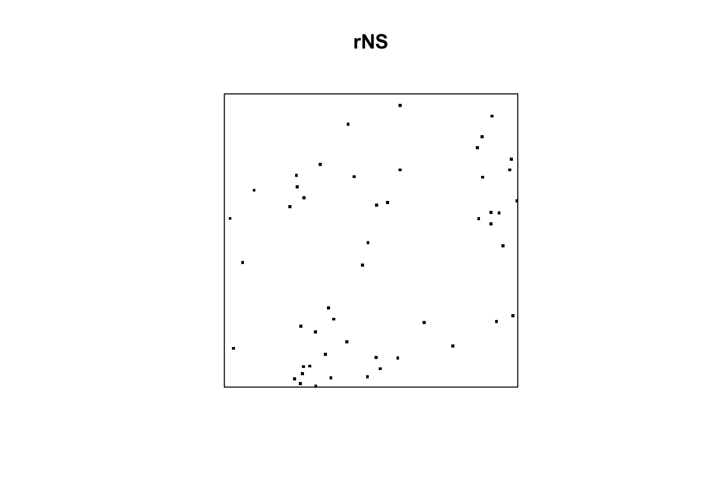

Week 6: Spatial Point Process – spatstat
1 Introduction
- In this lab, you will learn
- Test of CSR
- Spatial Point Models
2 Test of CSR
2.1 Generate Poisson Process: HPP
library(spatstat)## Warning: package 'spatstat' was built under R version 3.6.2## Warning: package 'spatstat.data' was built under R version 3.6.2## Warning: package 'spatstat.geom' was built under R version 3.6.2## Warning: package 'spatstat.linnet' was built under R version 3.6.2data1 = rpoispp(lambda=100, win=owin(c(0,2),c(0,2)))
plot(data1, pch=46, cex =3) 
- Argument:
- lambda=100: intensity function, NOT number of points
- win=owin(c(0,2),c(0,2)): spatial point process data will be generated in the domain D = [0,2]*[0,2].
- Question: What is the expected number of events?
2.2 Quadrat test
Here, we will use R package spatstat
quadrat.test(data1, nx = 4, ny= 4, alternative = "two.sided", method = "Chisq")##
## Chi-squared test of CSR using quadrat counts
##
## data: data1
## X2 = 20.05, df = 15, p-value = 0.3401
## alternative hypothesis: two.sided
##
## Quadrats: 4 by 4 grid of tiles- Argument:
- pp: the dataset must be a “ppp” class.
- nx=4, ny =4: number of block on x-axis and y-axis. Here, we have 4*4=16 blocks.
- alternative: alternative hypothesis. You can choose one of “two.sided”, “regular”, “clustered”
- method: the method used to compute p-value. “Chisq” (analytical way), “MonteCarlo”
Since p-value is bigger than 0.05, we fail to reject \(H_0\).
2.3 Test: G Function
r=seq(0,sqrt(2), by=0.005)
Gtest=envelope(data1,fun=Gest, r=r, nrank=2, nsim=99)## Generating 99 simulations of CSR ...
## 1, 2, 3, 4, 5, 6, 7, 8, 9, 10, 11, 12, 13, 14, 15, 16, 17, 18, 19, 20, 21, 22, 23, 24, 25, 26, 27, 28, 29, 30, 31, 32, 33, 34, 35, 36, 37, 38, 39, 40,
## 41, 42, 43, 44, 45, 46, 47, 48, 49, 50, 51, 52, 53, 54, 55, 56, 57, 58, 59, 60, 61, 62, 63, 64, 65, 66, 67, 68, 69, 70, 71, 72, 73, 74, 75, 76, 77, 78, 79, 80,
## 81, 82, 83, 84, 85, 86, 87, 88, 89, 90, 91, 92, 93, 94, 95, 96, 97, 98, 99.
##
## Done.- Argument:
- nsim: the number of simulated datasets
- nrank: similar to deciding the significant level
- Note that (2+2+1)/(99+1) = 0.05, and therefore, it is a similar to test at “significant level” = 0.05
- That is, if you want to ensure \(\alpha\) (significant level), you need to set \((2nrank+1)/(nsim+1) = \alpha\).
- fun: Gest
- r: where the G function will be evaluated. (\(h\) in our slides.)
plot(Gtest)
What do you conclude from the above plot?
2.4 ppp class
As mentioned earlier, package spatstat uses ppp class. We can transform between SpatialPoints class in sp package and ppp class using the function as in package maptools
library(sp)
library(maptools)## Checking rgeos availability: TRUE# from ppp class to SpatialPoints class
spdata1=as(data1, "SpatialPoints")
class(spdata1) ## [1] "SpatialPoints"
## attr(,"package")
## [1] "sp"# from SpatialPoints class to ppp class
pppdata1=as(spdata1, "ppp")
class(pppdata1) ## [1] "ppp"3 Spatial Point Models
3.1 Create IPP
# inhomogeneous Poisson process in unit square
# with intensity lambda(x,y) = min(10 * exp(3*x), 100), where $s = (x, y)^T$
lamb = function(x,y) { 10 * exp( 3 * x)}
ipp = rpoispp(lambda=lamb, lmax=100)
plot(ipp, pch=46, cex =3)
Here, lmax specifies the largest possible intensity. For example, when \(x=1\), we have \(10\exp(3x)=201\). However, since lmax = 100 is specified, the intensity will be 100. That is, we achieve "intensity lambda(x,y) = min(10 * exp(3*x), 100)".
3.2 Create Neyman-Scott Process: clustered data pattern
nclust <- function(x0, y0, radius, n) {
return(runifdisc(n, radius, centre=c(x0, y0)))
}
rNS = rNeymanScott(kappa=10, expand=0.2,
rcluster = nclust, radius=0.2, n=5)
plot(rNS, pch=46, cex =3)
- Argument:
- kappa: Intensity of the Poisson process for parent points (that is, \(\lambda\) in our slides) – step (i)
- expand: Size of the expansion of the simulation window for parent points – step (i)
- rcluster: step \((ii^*)--(iii^*)\): here runifdisc function is used.
- About runifdisc function: runifdisc(n, radius)
- Generate a random point pattern containing \(n\) independent uniform random points in a circular disc.
- n: Number of offspring. Here, n=5 – in step \((ii^*)\).
- radius: Radius of the circle. radius = 0.2
- center: Coordinates of the center of the circle (that is, the location of the parent).
3.3 Create Matern I and Matern II: regular data pattern
matI = rMaternI(kappa = 10, r = 0.1)
matII = rMaternII(kappa = 10, r = 0.1)
par(mfrow=c(1,2))
plot(matI, main="", pch=46, cex =3)
plot(matII, main="", pch=46, cex =3)
- kappa: the intensity of the Poisson process (that is, \(\lambda\) in our slides).
- r: Inhibition distance. (\(\delta\) in our slides)
3.4 Further Study
If you have time, can you test rNS data whether it follow clustered point pattern?